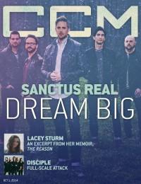

CMnexus: Contemporary Christian culture, music, and media.
|
|
Sanctus RealOn the cover|  | 1 October 2014
CCM Digital | Media coverage:- Jan 2002 in CCM "The Best of Indies: Sanctus Real, Pegtop, Jenny Wheeler", by Jerry Chamberlain
- Jan 2003 in CCM "Ones to Watch: Sanctus Real", by Stephanie Ottosen
- Mar 2003 in 7ball "Emerging Acts: Sanctus Real", by Haistina Davis
- Mar 2003 in HM "Live Report: Austin Cornerstone, Austin, TX", by Kern County Kid
- Jan 2004 in CCM "2004 Reader's Choice Awards: Say It Loud: Sanctus Real Rules"
- Mar 2004 in CCM "The Verdict Is In: 'Rock & Roll Is Here To Stay'", by Anthony DeBarros
- Jul 2004 in CCM "A League of It's Own", by David A. Jenison
- Sep 2004 in Group "Culture: Ministry and Media: Sanctus Real", by Bryan Belknap
- 2005 in Christian Guitarist & Bassist "Interview: Sanctus Real", by Steven Douglas Losey
- Mar 2005 in Campus Life "Music: Overcoming My Fear", by Todd Hertz
- Apr 2006 in CCM "!Rock", by Andy Argyrakis
- May 2006 in CCM "Real Life", by Brian Quincy Newcomb
- Nov 2006 in CCM "Get Real: We Appreciate Your Addiction", by Gregory J Rumburg
- Mar 2007 in Christian Music Planet "Studio Works: Sanctus Real", by Andy Argyrakis
- Mar 2008 in CCM "Keeping It Real", by Andree Farias
- Mar 2010 in CCM Digital "Redemptive Pieces", by Andrew Greer
- May 2010 in CCM Digital "Hit the Road: Pieces of a Real Heart Tour, Oak Brook Community Church, Oak Brook, IL", by Andy Argyrakis
- Jan 2012 in CCM Digital "Winter Wonder Jam"
- Feb 2012 in HM "Live Report: WinterJam 2012", by Nicole Murphy
- Feb 2013 in CCM Digital "Picking Up the Pace", by Caroline Lusk
- Apr 2013 in CCM Digital "Tour Spotlight: The Promises Tour, Moraine Valley Church, Palos Heights, IL", by Andy Argyrakis
- Nov 2013 in CCM Digital "In [His/Her] Own Words: Why We Say Thanks", by Grace C. Cartwright
- 1 Oct 2014 in CCM Digital "Dream Big: Sanctus Real Is Livin' and Lovin' It", by Caroline Lusk
Albums & reviews:1998: All This Talk Of Aliens1999: Message For The Masses2001: Nothing To Lose2002: Say It Loud2004: Fight The Tide2006: The Face of Love2008: We Need Each Other2010: Pieces of a Real Heart2010: Pieces of Our Past: The Sanctus Real Anthology2013: Run2014: The Dream2015: Best Of Award Summary (Nominations / Wins)Dove Awards2005 Dove Awards2007 Dove Awards2011 Dove Awards2013 Dove Awards- Rock/Contemporary Album: Run
Grammy Awards2010 Grammy Awards- Best Pop/Contemporary Gospel Album: Pieces of a Real Heart
|